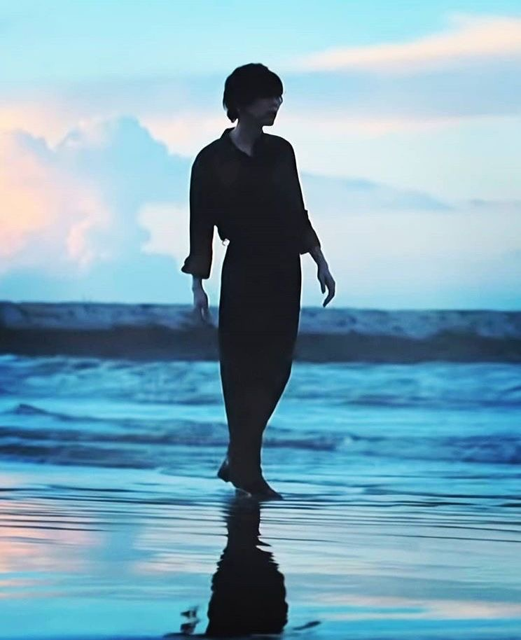

요네즈 켄시의 신곡 ‘지구본’에 대한 인터뷰가 실현되었다.
‘지구본’은 미야자키 하야오 감독의 신작 영화 ‘그대들은 어떻게 살 것인가’의 주제가로 새로 써낸 곡.
요네즈는 예전부터 스튜디오 지브리 작품에 대한 남다른 마음이나
미야자키 감독에 대한 경애의 마음을 공식적으로 언급해 왔지만, 그 긴 세월의 마음이 결실을 맺은 제작이 되었다.
7월 26일에 발매된 싱글 CD에는, 주제가 제작 과정을 쫓은 다큐멘터리 사진집도 동봉되어 있다.
4년에 걸친 제작의 배경에는 어떤 것들이 있었을까.
요네즈가 미야자키 하야오 감독 작품으로부터 받은 영향이나, 곡에 담은 생각 등에 대해 이야기해 주었다.


음악 나탈리 : 요네즈 켄시 ‘지구본’ 인터뷰
저는 이런 식으로 살아가겠습니다
저는 이런 식으로 살아가겠습니다

미야자키 하야오 감독 작품과의 만남, 강렬했던 원체험
(원체험-기억에 오래 남아 있어 어떤 식으로든 구애를 받게 되는 어린 시절의 체험)
요네즈 상의 지브리 영화, 미야자키 하야오 감독의 작품에 대한 첫 경험은 어떤 것이었나요?
가장 처음 본 것은 <모노노케 히메(원령공주)>에요.
1997년, 초등학교 1학년 때였죠. 당시 제가 살던 지역에는 영화관이 거의 없었고,
영화를 보러가는 일도 드물었기 때문에 영화관에서 영화를 본 것이 원체험이라고 해도 과언이 아니에요.
<모노노케 히메>를 처음 봤을 때의 기억이 굉장히 강렬하게 남아있네요.
1997년, 초등학교 1학년 때였죠. 당시 제가 살던 지역에는 영화관이 거의 없었고,
영화를 보러가는 일도 드물었기 때문에 영화관에서 영화를 본 것이 원체험이라고 해도 과언이 아니에요.
<모노노케 히메>를 처음 봤을 때의 기억이 굉장히 강렬하게 남아있네요.
어떤 부분이 충격적이었나요?
굉장히 폭력적인 영화였는데, 팔이나 목이 날아간다던지… 아이들이 보고 트라우마가 생길 수 있을 것 같은 장면이 펼쳐지더라고요.
‘내가 뭘 본거지’라는 느낌이 정말 강하게 들었어요. 그래서 그런지는 모르겠는데, 그 영화관에서의 기억도 남아있어요.
아버지 차를 타고 누나랑 셋이서 갔는데, 영화관에 들어가기 전에 맥도날드에 들러 햄버거를 사서 그 종이봉투를 좌석 밑에 놓고 봤거든요.
어두워지고나서 그 갈색 종이봉투가 스크린 불빛을 받아 희미하게 보이던 모습도 굉장히 기억에 남아요.
그만큼 기억에 강렬하게 남는 경험이었어요.
‘내가 뭘 본거지’라는 느낌이 정말 강하게 들었어요. 그래서 그런지는 모르겠는데, 그 영화관에서의 기억도 남아있어요.
아버지 차를 타고 누나랑 셋이서 갔는데, 영화관에 들어가기 전에 맥도날드에 들러 햄버거를 사서 그 종이봉투를 좌석 밑에 놓고 봤거든요.
어두워지고나서 그 갈색 종이봉투가 스크린 불빛을 받아 희미하게 보이던 모습도 굉장히 기억에 남아요.
그만큼 기억에 강렬하게 남는 경험이었어요.
그 당시 <모노노케 히메>를 시작으로 많은 작품들을 실시간으로 보셨을 텐데,
그중에서도 특히 기억에 남는 작품이 있나요?
그중에서도 특히 기억에 남는 작품이 있나요?
초등학교 5학년 때 보러 갔던 <센과 치히로의 행방불명>이 가장 기억에 남아요. 왜인지는 말로 잘 설명할 수 없는 부분이 있긴 하지만,
주인공 ‘치히로’가 그 당시 저와 비슷한 나이라는 점도 그렇고 어린 시절의 제가 일상에서는 절대로 일어날 수 없는 일들이 일어나는
환상적인 공상 세계에 대한 동경이 컸기 때문일 거예요. 어딘가에 정말로 있을 것 같은 소녀가
우연한 계기로 어딘지 알 수 없는 곳에 빠져버린다는 것이 어린 시절의 제게는 현실성이 있었고,
어쩌면 저도 일상 속에서 길을 잘못 들어서 어딘가의 좁고 험한 길로 들어서면 그런 세계가 펼쳐져 있을지도 모른다는,
그런 가능성을 보여주는 것 같은 느낌이 들었어요. 그게 저한테는 남다른 경험이었던 것 같습니다.
주인공 ‘치히로’가 그 당시 저와 비슷한 나이라는 점도 그렇고 어린 시절의 제가 일상에서는 절대로 일어날 수 없는 일들이 일어나는
환상적인 공상 세계에 대한 동경이 컸기 때문일 거예요. 어딘가에 정말로 있을 것 같은 소녀가
우연한 계기로 어딘지 알 수 없는 곳에 빠져버린다는 것이 어린 시절의 제게는 현실성이 있었고,
어쩌면 저도 일상 속에서 길을 잘못 들어서 어딘가의 좁고 험한 길로 들어서면 그런 세계가 펼쳐져 있을지도 모른다는,
그런 가능성을 보여주는 것 같은 느낌이 들었어요. 그게 저한테는 남다른 경험이었던 것 같습니다.
<센과 치히로의 행방불명>에서 좋아하는 장면이나 특히 기억에 남는 장면이 있나요?
뻔한 답변이지만, 바다에 잠긴 선로를 아이들끼리 걸어가는 장면을 정말 좋아해요.
요즘 제 라이브에서 오프닝과 엔딩을 똑같은 영상으로 장식하는 것을 자주 하고 있거든요.
그건 <센과 치히로의 행방불명>의 영향이에요. 처음 본 것과 마지막에 본 것이 그 사이에 본 것을 거치면
느낌이 전혀 달라진다고 하더라고요. 이건 미야자키 상의 말이 실린 책을 읽고 알게 된 사실인데요,
영화라는 것을 터널로 비유해보자면, 터널에 들어갔다가 나올 때 조금은 관점이 달라져 있었으면 좋겠어요.
그러니까 영화관에 오기 전과 온 후, 세상을 바라보는 시각이 조금이라도 달라졌으면 한다는 말인데,
그런 것을 표현하기 위해 처음과 끝을 같은 그림으로 만드는 것이 굉장히 효과적이라고 생각했어요.
그런 의미에서도 <센과 치히로의 행방불명>에게서 받은 영향이 가장 크지 않을까 싶어요.
요즘 제 라이브에서 오프닝과 엔딩을 똑같은 영상으로 장식하는 것을 자주 하고 있거든요.
그건 <센과 치히로의 행방불명>의 영향이에요. 처음 본 것과 마지막에 본 것이 그 사이에 본 것을 거치면
느낌이 전혀 달라진다고 하더라고요. 이건 미야자키 상의 말이 실린 책을 읽고 알게 된 사실인데요,
영화라는 것을 터널로 비유해보자면, 터널에 들어갔다가 나올 때 조금은 관점이 달라져 있었으면 좋겠어요.
그러니까 영화관에 오기 전과 온 후, 세상을 바라보는 시각이 조금이라도 달라졌으면 한다는 말인데,
그런 것을 표현하기 위해 처음과 끝을 같은 그림으로 만드는 것이 굉장히 효과적이라고 생각했어요.
그런 의미에서도 <센과 치히로의 행방불명>에게서 받은 영향이 가장 크지 않을까 싶어요.
위대한 스승으로서, 아버지와 같은 존재로서
어린 시절의 원체험뿐만 아니라, 아티스트로서 음악을 만들게 된 이후에도
스튜디오 지브리의 작품이나 미야자키 하야오 감독의 사고방식이나 사물을 바라보는 시각을
참고하는 경우가 많았나요?
스튜디오 지브리의 작품이나 미야자키 하야오 감독의 사고방식이나 사물을 바라보는 시각을
참고하는 경우가 많았나요?
그렇죠. 제 인생에서 가장 많이 참고하지 않았나 싶어요. 다만 왜 그렇게 되었는지는 저 스스로도 전혀 기억하고 있지 않아요.
물론 어렸을 때부터 미야자키 감독의 영화를 보면서 살아왔지만, 그 이후에 무언가를 만드는 입장이 되어서도
참고하게 된 큰 계기가 무엇이었는지, 어떤 타이밍에서 시작되었는지도 전혀 기억나지 않아요.
그 정도로 자연스럽게 일종의 사숙(직접 가르침을 받지는 않았으나 마음속으로 그 사람을 본받아서 도나 학문을 닦음)이
시작된 느낌이 들어요.
물론 어렸을 때부터 미야자키 감독의 영화를 보면서 살아왔지만, 그 이후에 무언가를 만드는 입장이 되어서도
참고하게 된 큰 계기가 무엇이었는지, 어떤 타이밍에서 시작되었는지도 전혀 기억나지 않아요.
그 정도로 자연스럽게 일종의 사숙(직접 가르침을 받지는 않았으나 마음속으로 그 사람을 본받아서 도나 학문을 닦음)이
시작된 느낌이 들어요.
그렇군요.
<그대들은 어떻게 살 것인가>의 주제가를 만들게 되면서 저한테 지브리 영화,
나아가 미야자키 하야오 감독이란 어떤 존재인가를 다시 한 번 생각해보니, 제게는 스승이라고 할 수 있는 존재가 없더라고요.
예를 들어 음악에 있어서도, 그림에 있어서도 누군가로부터 명확하게 무언가를 배운 경험이 거의 없어요.
학업도 크게 신경쓰지 않고 살아왔고, 선배와 후배, 상사와 부하, 그런 관계도 거의 경험하지 못했어요.
선배한테서 무언가를 배워서 그게 내 인격에 큰 영향을 미쳤다거나 하는, 그런 경험이 굉장히 희박한 것 같다는 생각이 들었어요.
그래서 스승과 같은 존재로 미야자키 하야오상을 원했을지도 모르겠어요. 위대한 스승으로서, 더 나아가 아버지 같은 존재로서요.
그의 영화에는 축복이 넘쳐나고 있지만, 서적을 읽어보면 굉장히 신랄한 말들이 넘쳐나거든요.
저라는 존재를 제대로 부정해주고, 그러면서 동시에 ‘너는 살아가도 괜찮다’는 것을 알려주죠.
그에게서 그런 일종의 아버지 같은 면모를 바라고 있었을지도 모른다는 생각은, 최근에서야 하게 됐죠.
나아가 미야자키 하야오 감독이란 어떤 존재인가를 다시 한 번 생각해보니, 제게는 스승이라고 할 수 있는 존재가 없더라고요.
예를 들어 음악에 있어서도, 그림에 있어서도 누군가로부터 명확하게 무언가를 배운 경험이 거의 없어요.
학업도 크게 신경쓰지 않고 살아왔고, 선배와 후배, 상사와 부하, 그런 관계도 거의 경험하지 못했어요.
선배한테서 무언가를 배워서 그게 내 인격에 큰 영향을 미쳤다거나 하는, 그런 경험이 굉장히 희박한 것 같다는 생각이 들었어요.
그래서 스승과 같은 존재로 미야자키 하야오상을 원했을지도 모르겠어요. 위대한 스승으로서, 더 나아가 아버지 같은 존재로서요.
그의 영화에는 축복이 넘쳐나고 있지만, 서적을 읽어보면 굉장히 신랄한 말들이 넘쳐나거든요.
저라는 존재를 제대로 부정해주고, 그러면서 동시에 ‘너는 살아가도 괜찮다’는 것을 알려주죠.
그에게서 그런 일종의 아버지 같은 면모를 바라고 있었을지도 모른다는 생각은, 최근에서야 하게 됐죠.
이전 인터뷰에서 <바람계곡의 나우시카>를 바탕으로 <비연(飛燕)>이라는 곡을 썼다고 하셨는데요.
특히 만화판 <바람계곡의 나우시카>에 큰 영향을 받았고, 그것이 본인의 지침이 되었다고 하셨는데,
그게 어떤 것이었는지 다시 이야기해주시겠어요?
특히 만화판 <바람계곡의 나우시카>에 큰 영향을 받았고, 그것이 본인의 지침이 되었다고 하셨는데,
그게 어떤 것이었는지 다시 이야기해주시겠어요?
<센과 치히로의 행방불명>이 어린 시절의 경험이라면, 만화판 <바람계곡의 나우시카>는 청년기, 그러니까 18살 정도의,
시골에서 나와 오사카에 살면서 여러 가지를 흡수하던 시기에 만난 작품입니다. 가장 인상 깊었던 것은 마지막 장면이었어요.
무덤의 주인과 나우시카가 대면하는 장면에서
“너희는 위험한 어둠이다”라는 무덤의 주인의 말에 나우시카가 “아니, 생명은 어둠 속 반짝이는 빛이다!”라고 답하거든요.
그 ‘어둠 속 반짝이는 빛’이라는 말이 그 당시 제게는 엄청난 충격이었어요. 짧고 간결하지만 제 삶의 방식과 일치했고,
그렇게 보편적인 단어들로 무언가를 남길 수 있다는 것이 정말 커다란 경험이었어요.
정말로, 그 한마디만으로도 나 스스로가 앞으로도 살아갈 수 있을거라는 생각이 들었어요.
당시에는 어둠 속에서 허우적거리는 삶을 살았고, 빛을 낼 수 없는 내가 이 세상을 살아가도 괜찮은건가 하는 절망과 실망에 빠져있었는데,
‘아아, 그래도 괜찮은거구나’하고 제 삶을 그대로 긍정해준 것 같은 충격을 받았었죠.
그래서 <바람계곡의 나우시카>는 제게 소중한 것이 되었습니다.
시골에서 나와 오사카에 살면서 여러 가지를 흡수하던 시기에 만난 작품입니다. 가장 인상 깊었던 것은 마지막 장면이었어요.
무덤의 주인과 나우시카가 대면하는 장면에서
“너희는 위험한 어둠이다”라는 무덤의 주인의 말에 나우시카가 “아니, 생명은 어둠 속 반짝이는 빛이다!”라고 답하거든요.
그 ‘어둠 속 반짝이는 빛’이라는 말이 그 당시 제게는 엄청난 충격이었어요. 짧고 간결하지만 제 삶의 방식과 일치했고,
그렇게 보편적인 단어들로 무언가를 남길 수 있다는 것이 정말 커다란 경험이었어요.
정말로, 그 한마디만으로도 나 스스로가 앞으로도 살아갈 수 있을거라는 생각이 들었어요.
당시에는 어둠 속에서 허우적거리는 삶을 살았고, 빛을 낼 수 없는 내가 이 세상을 살아가도 괜찮은건가 하는 절망과 실망에 빠져있었는데,
‘아아, 그래도 괜찮은거구나’하고 제 삶을 그대로 긍정해준 것 같은 충격을 받았었죠.
그래서 <바람계곡의 나우시카>는 제게 소중한 것이 되었습니다.
이전 인터뷰에서 2018년에 미야자키 감독과 스즈키 토시오 프로듀서를 처음 만났을 때의 이야기를 했었죠.
실제로 대면하고 나서 인상이 달라진 부분은 있었나요?
실제로 대면하고 나서 인상이 달라진 부분은 있었나요?
다큐멘터리에서 보았던 미야자키 상은 스태프에게 심한 말을 내뱉는 장면이 나오기도 하고, 고집불통의 아버지 같은 이미지가 있었어요.
하지만 잘 생각해 보면 당연한 이야기인데, 처음 만난 젊은 사람에게 그런 태도를 보일 리가 없잖아요.
처음 만났을 때는 웃는 얼굴이셨고 밝은 할아버지라는 인상이었어요.
이름도 성도 모르는 청년에게 “몇 살이니?” 하셔서 제가 “27살입니다” 하니 “27년이라니, 엊그제 같은데” 하는 말씀을 해주셨어요.
그때는 그냥 하신 말씀이라고 생각했는데, 그렇게 제대로 말을 주고 받았던 것이 제게는 굉장히 파격적인 경험이었죠.
하지만 잘 생각해 보면 당연한 이야기인데, 처음 만난 젊은 사람에게 그런 태도를 보일 리가 없잖아요.
처음 만났을 때는 웃는 얼굴이셨고 밝은 할아버지라는 인상이었어요.
이름도 성도 모르는 청년에게 “몇 살이니?” 하셔서 제가 “27살입니다” 하니 “27년이라니, 엊그제 같은데” 하는 말씀을 해주셨어요.
그때는 그냥 하신 말씀이라고 생각했는데, 그렇게 제대로 말을 주고 받았던 것이 제게는 굉장히 파격적인 경험이었죠.
그 무렵 미야자키 감독이 신작 장편영화를 만든다는 소식은 이미 세상에 전해지고 있었죠.
<털벌레 보로>라는 미야자키 상이 만든 단편 영화가 완성될 무렵,
지브리에서 발행하는 <열풍(熱風)>이라는 소책자 인터뷰를 할 일이 있어서 지브리에 갔었어요.
그때 ‘모처럼이니까’ 하며 스튜디오를 구경하게 됐었는데, 그때 이미 <그대들 어떻게 살 것인가>의 설정 자료나
마히토의 얼굴도 벽에 붙어 있었어요. ‘이게 다음 신작인가, 어떤 식으로 만들어질까’같은 생각을 했던 기억이 납니다.
지브리에서 발행하는 <열풍(熱風)>이라는 소책자 인터뷰를 할 일이 있어서 지브리에 갔었어요.
그때 ‘모처럼이니까’ 하며 스튜디오를 구경하게 됐었는데, 그때 이미 <그대들 어떻게 살 것인가>의 설정 자료나
마히토의 얼굴도 벽에 붙어 있었어요. ‘이게 다음 신작인가, 어떤 식으로 만들어질까’같은 생각을 했던 기억이 납니다.
영광임과 동시에, 역시 너무나 두려웠다
주제가에 대한 의뢰가 들어온 것은
미야자키 상이 Foorin의 <파프리카>를 라디오에서 들은 것이 계기였다고 들었어요.
미야자키 상이 Foorin의 <파프리카>를 라디오에서 들은 것이 계기였다고 들었어요.
<파프리카>는 아이들이 노래하고 춤추는 곡을 만드는 것이었는데, 그건 저도 처음하는 경험의 작품이었죠.
그리고 어떤 무언가의 응원가였으면 좋겠다는 요청도 있었거든요.
원래대로라면 응원받는 입장인 아이들이 오히려 응원가를 부른다는 게 어떤 의미일까 고민하던 시기에
미야자키 감독의 영화가 큰 참고 자료가 됐죠. 계속 아이들을 마주하며 영화를 만들어온 사람이기 때문에
그가 어떤 방식으로 영화를 만들어왔는지 다시 한 번 살펴보게 되었죠.
그리고 제가 내린 일종의 결론이 아이들을 얕보지 말자는 것이었어요.
‘이렇게 하면 노래하기 힘들지 않을까’, ‘이 말을 아이들이 알아들을까’, 그런 식으로 아이들의 정신성이나 신체성보다
쉽게 가려고 하는 것은 분명 아이들을 얕보는 일로 이어질 거라고 생각했어요.
‘아이는 이런 것이다’ 라는 틀을 제가 만들어내는 것이 아니라, 그저 ‘이런 것이 완성됐는데, 여러분은 어떻게 생각하세요’
하는 식으로 같은 위치에서 만들어 나가는 것이 중요하지 않을까, 그런 생각을 하면서 <파프리카>라는 곡을 만들었죠.
그런데 1년 정도 지나서 갑자기 ‘지브리 영화 주제가를 맡아주시면 어떨까요’하는 이야기를 듣게 된거에요.
경악 그 자체였죠. “에에!?” 같은 느낌이었어요.
그리고 어떤 무언가의 응원가였으면 좋겠다는 요청도 있었거든요.
원래대로라면 응원받는 입장인 아이들이 오히려 응원가를 부른다는 게 어떤 의미일까 고민하던 시기에
미야자키 감독의 영화가 큰 참고 자료가 됐죠. 계속 아이들을 마주하며 영화를 만들어온 사람이기 때문에
그가 어떤 방식으로 영화를 만들어왔는지 다시 한 번 살펴보게 되었죠.
그리고 제가 내린 일종의 결론이 아이들을 얕보지 말자는 것이었어요.
‘이렇게 하면 노래하기 힘들지 않을까’, ‘이 말을 아이들이 알아들을까’, 그런 식으로 아이들의 정신성이나 신체성보다
쉽게 가려고 하는 것은 분명 아이들을 얕보는 일로 이어질 거라고 생각했어요.
‘아이는 이런 것이다’ 라는 틀을 제가 만들어내는 것이 아니라, 그저 ‘이런 것이 완성됐는데, 여러분은 어떻게 생각하세요’
하는 식으로 같은 위치에서 만들어 나가는 것이 중요하지 않을까, 그런 생각을 하면서 <파프리카>라는 곡을 만들었죠.
그런데 1년 정도 지나서 갑자기 ‘지브리 영화 주제가를 맡아주시면 어떨까요’하는 이야기를 듣게 된거에요.
경악 그 자체였죠. “에에!?” 같은 느낌이었어요.
이야기를 듣고 가장 먼저, 놀라셨군요.
네. 일단 ‘왜?’ 싶잖아요. 이래저래 이야기를 들어보니, 라디오에서 흘러나오는 <파프리카>를 미야자키 상이 들으셨대요.
그리고 어느날 지브리에서 운영하는 어린이집에서 아이들이 이 노래를 부르고 춤을 추는데, 미야자키 상도 같이 따라 부르고 계셨대요.
그걸 본 스즈키 상이, 이건 뭐 일종의 운명일 거라고 생각해서
“이 곡을 만든 사람에게 주제가를 만들어 달라고 하면 어떨까요?”라고 물었더니 “그거 좋네요.”하셨대요.
그러니까, 미야자키 상의 영화가 큰 밑거름이 되어 만든 <파프리카>라는 곡을 미야자키 상이 듣고,
다시 그것이 계기가 되어 <그대들은 어떻게 살 것인가>의 주제가 담당으로 눈에 띄게 되었다는 것이… 뭔가 감회가 남달랐어요.
그리고 어느날 지브리에서 운영하는 어린이집에서 아이들이 이 노래를 부르고 춤을 추는데, 미야자키 상도 같이 따라 부르고 계셨대요.
그걸 본 스즈키 상이, 이건 뭐 일종의 운명일 거라고 생각해서
“이 곡을 만든 사람에게 주제가를 만들어 달라고 하면 어떨까요?”라고 물었더니 “그거 좋네요.”하셨대요.
그러니까, 미야자키 상의 영화가 큰 밑거름이 되어 만든 <파프리카>라는 곡을 미야자키 상이 듣고,
다시 그것이 계기가 되어 <그대들은 어떻게 살 것인가>의 주제가 담당으로 눈에 띄게 되었다는 것이… 뭔가 감회가 남달랐어요.
주제가를 부탁하게 된 경위를 듣고 곡을 만들게 됐을 때의 느낌은 어땠나요?
잘 기억이 나지 않아요. 처음 이야기를 들었을 때의 느낌도, 사실 거의 기억이 나지 않아요.
저한테는 충격적인 기억으로 남아있어도 이상하지 않잖아요. 하지만 그때의 풍경이나 감정도 거의 기억이 나지 않아요.
왜 그럴까 생각해보니, 영광스러우면서도 역시 한편으론 굉장히 두려웠던 것 같아요.
제 인생에서 가장 영광스러운 일인 동시에 제 음악가 인생이 끝나는 게 아닌가 하는,
어렴풋한 불안감 같은 것이 그때부터 4년간 계속 있었어요.
그래서 기억이 잘 나지 않는다는 게 솔직한 심정입니다.
저한테는 충격적인 기억으로 남아있어도 이상하지 않잖아요. 하지만 그때의 풍경이나 감정도 거의 기억이 나지 않아요.
왜 그럴까 생각해보니, 영광스러우면서도 역시 한편으론 굉장히 두려웠던 것 같아요.
제 인생에서 가장 영광스러운 일인 동시에 제 음악가 인생이 끝나는 게 아닌가 하는,
어렴풋한 불안감 같은 것이 그때부터 4년간 계속 있었어요.
그래서 기억이 잘 나지 않는다는 게 솔직한 심정입니다.
빠짐없이 받아들이고 돌아가자
미야자키 감독이나 스즈키 프로듀서로부터 작품에 대한 설명을 듣거나, 미팅 같은 것이 있기도 했나요?
먼저 그림 콘티를 받아서 그걸 읽게 됐습니다. 그 후에 대면해서 미팅 형식으로 이야기를 나누었죠.
미야자키 상에게는 기본적인 이념에 대한 이야기라고 할까,
그동안 여러 영화를 만들어 왔지만 이번에는 ‘뚜껑을 열어보자’는 이야기를 들었어요.
지금까지는 본인 안에 있는 어둡고 질척이는 부분에 어떤 의미에서 뚜껑을 덮어두고 살아왔지만,
이번에는 그런 것도 다 치우고, 본인이 지금까지 가지 않았던 부분,
어딘가 떳떳하지 못한 부분까지 전부 영화로 만들려고 한다는 이야기를 해주셨어요.
미야자키 상에게는 기본적인 이념에 대한 이야기라고 할까,
그동안 여러 영화를 만들어 왔지만 이번에는 ‘뚜껑을 열어보자’는 이야기를 들었어요.
지금까지는 본인 안에 있는 어둡고 질척이는 부분에 어떤 의미에서 뚜껑을 덮어두고 살아왔지만,
이번에는 그런 것도 다 치우고, 본인이 지금까지 가지 않았던 부분,
어딘가 떳떳하지 못한 부분까지 전부 영화로 만들려고 한다는 이야기를 해주셨어요.
그랬군요.
또 본인이 어렸을 때 ‘내가 과연 이 세상에 살아도 되는 걸까’라는 고민과 부정적인 생각들을 안고 살았던 것을 잘 기억하고 있다고,
그래서 영화를 통해 그 시절의 자기 자신이나 지금 시대를 살아가는 그 시절의 자신과 같은 세대의 아이들에게
‘이 세상을 살아가도 괜찮다’, ‘이 세상은 살만한 가치가 있다’는 것을 전하고 싶다는 이야기를 하기도 하셨어요.
이 말은 다른 책이나 인터뷰에서도 미야자키 상이 항상 이야기해 온 것이어서 저도 들어본 적이 있긴 했지만,
실제로 그의 입을 통해 제 귀에 날아들어온거죠. 미야자키 씨가 그 말을 하면서 감정이 북받쳐 살짝 눈물을 흘리셨거든요.
그게 정말 강렬하게 기억에 남아있네요.
그래서 영화를 통해 그 시절의 자기 자신이나 지금 시대를 살아가는 그 시절의 자신과 같은 세대의 아이들에게
‘이 세상을 살아가도 괜찮다’, ‘이 세상은 살만한 가치가 있다’는 것을 전하고 싶다는 이야기를 하기도 하셨어요.
이 말은 다른 책이나 인터뷰에서도 미야자키 상이 항상 이야기해 온 것이어서 저도 들어본 적이 있긴 했지만,
실제로 그의 입을 통해 제 귀에 날아들어온거죠. 미야자키 씨가 그 말을 하면서 감정이 북받쳐 살짝 눈물을 흘리셨거든요.
그게 정말 강렬하게 기억에 남아있네요.
미야자키 감독의 어린 시절 이야기도 하셨군요.
네. 아예 상관없는 이야기도 많이 했어요. 미야자키 상이 배 그림을 그리기 위해 동네 강에 나무로 만든 배를 띄웠는데,
그게 풀과 나무에 걸려버린거에요. 그리고는 그게 언제 가도 계속 같은 곳에 머물러 있었대요.
그게 마치 저주처럼 보였다고 하시더라고요. 최근에 있었던 일을 그냥 이야기 해주신 것뿐이라고 생각하지만,
그런 말씀도 굉장히 인상 깊게 남았죠.
그게 풀과 나무에 걸려버린거에요. 그리고는 그게 언제 가도 계속 같은 곳에 머물러 있었대요.
그게 마치 저주처럼 보였다고 하시더라고요. 최근에 있었던 일을 그냥 이야기 해주신 것뿐이라고 생각하지만,
그런 말씀도 굉장히 인상 깊게 남았죠.
제작에 관한 회의뿐만 아니라, 어린 시절의 기억을 이야기하거나 이걸 보고 이렇게 느꼈다는 식의
진솔한 이야기를 나누는 시간이 굉장히 소중했을 것 같은 느낌이 드네요.
진솔한 이야기를 나누는 시간이 굉장히 소중했을 것 같은 느낌이 드네요.
맞아요. 저는 정말 어린 시절부터 그의 영화에 구원받고 살아왔으니까요. 청년기부터는 제멋대로 사숙이 시작되기도 했고요.
개인적인 이야기지만, 제게는 아마 가장 커다란 스승이 아닐까 싶어요. 그런 그와 함께 일할 수 있다니…
책상을 사이에 두고 마주보고 앉아서 그의 일거수일투족, 하는 말씀들을 하나도 빠짐없이 받아들이고 돌아가자, 그렇게 생각했어요.
처음에는 엄청나게 어깨를 움츠리고 긴장하고 있었죠.
개인적인 이야기지만, 제게는 아마 가장 커다란 스승이 아닐까 싶어요. 그런 그와 함께 일할 수 있다니…
책상을 사이에 두고 마주보고 앉아서 그의 일거수일투족, 하는 말씀들을 하나도 빠짐없이 받아들이고 돌아가자, 그렇게 생각했어요.
처음에는 엄청나게 어깨를 움츠리고 긴장하고 있었죠.
낡지도 새롭지도 않은,
오래도록 들을 수 있는 것을
오래도록 들을 수 있는 것을
실제로 곡을 만들기 시작한 것은 언제부터였나요?
잘 기억나지는 않는데, 아마 2년 전쯤부터 만들기 시작했던 것 같아요. 계속 콘티를 보면서 어떤 게 좋을지 고민하고 있었거든요,
언제 공개될지 모르는 상태에서요.
그 안에서 제가 할 수 있는 최대한의 시행착오를 해보고 싶어서, 생각도 하고 손을 움직이기는 하면서도 콘티를 받은 후
2년 정도 동안은 곡으로 정리해 써내는 일은 없었어요. 그저 콘티를 마주하고 있는 시간이 계속해서 흘러갔죠.
언제 공개될지 모르는 상태에서요.
그 안에서 제가 할 수 있는 최대한의 시행착오를 해보고 싶어서, 생각도 하고 손을 움직이기는 하면서도 콘티를 받은 후
2년 정도 동안은 곡으로 정리해 써내는 일은 없었어요. 그저 콘티를 마주하고 있는 시간이 계속해서 흘러갔죠.
곡을 만들 때 다양한 선택지가 있겠지만,
이 영화의 마지막에 흘러나오는 곡이라면 당연히 이런 곡조가 어울릴 것이라는 이미지도 있었을 것 같아요.
요네즈 상이 곡을 만들 때 출발점이 된 것은 어떤 부분이었나요?
이 영화의 마지막에 흘러나오는 곡이라면 당연히 이런 곡조가 어울릴 것이라는 이미지도 있었을 것 같아요.
요네즈 상이 곡을 만들 때 출발점이 된 것은 어떤 부분이었나요?
처음부터 뼈대 자체는 정해져 있었습니다. ‘스코틀랜드 민요를 만들자’라는 것부터 시작했어요.
왜 그렇게 되었는지를 묻는다면 답하기 참 어려운 부분이 있지만,
제가 미야자키 상의 영화에서 계속 느꼈던 것이 스코틀랜드 민요적인 무언가였어요.
그런 느낌의 소박한 것을 만들자고 생각했습니다. 여러 악기 사운드를 쌓아올려서 화려하게 울려퍼지는 것보다는 정말 소박하게,
피아노나 최소한의 악기를 사용하고 나머지는 제 목소리로 노래하는 거죠.
낡지도 새롭지도 않은, 더 나아가 애초부터 오래된 느낌의, 그런 포맷으로 오래 들을 수 있는 것을 만들어야 한다는 것은 거의 처음부터
정해져 있었어요.
왜 그렇게 되었는지를 묻는다면 답하기 참 어려운 부분이 있지만,
제가 미야자키 상의 영화에서 계속 느꼈던 것이 스코틀랜드 민요적인 무언가였어요.
그런 느낌의 소박한 것을 만들자고 생각했습니다. 여러 악기 사운드를 쌓아올려서 화려하게 울려퍼지는 것보다는 정말 소박하게,
피아노나 최소한의 악기를 사용하고 나머지는 제 목소리로 노래하는 거죠.
낡지도 새롭지도 않은, 더 나아가 애초부터 오래된 느낌의, 그런 포맷으로 오래 들을 수 있는 것을 만들어야 한다는 것은 거의 처음부터
정해져 있었어요.
인트로의 백파이프 음색도 인상적인데, 이건요?
곡을 만드는 도중에 엘리자베스 여왕이 돌아가셔서 그 국장의 영상을 보게 됐어요.
그 중 한 구절에 매일 아침 여왕을 깨우던 전속 백파이프 연주자의 독주가 있었죠.
대칭적인 화각 속에서 백파이프 연주자가 연주를 하면서 천천히 안쪽으로 들어가 사라지는 장면이 있었는데
그걸 보면서 굉장히 감정이입이 되는 부분이 있었어요.
그 백파이프 영상을 제가 만들고 있던 데모 음원 위에 올려놓고 시험삼아 들어봤더니 음계가 일치하더라고요.
알아보니까 백파이프라는 악기는 몇 가지 정해진 패턴의 음계밖에 없는데, 마침 만들고 있던 곡의 음계가 그 중 하나와 일치했던거죠.
이건 백파이프를 넣을 수밖에 없겠다 싶었어요. 원래는 피아노 한 대만을 연주하는 형태로 가려고 했는데,
그 경험을 하고 나서는, 이건 뭔가 있다 싶어서 넣을 수밖에 없다는 느낌이 들었죠.
그 중 한 구절에 매일 아침 여왕을 깨우던 전속 백파이프 연주자의 독주가 있었죠.
대칭적인 화각 속에서 백파이프 연주자가 연주를 하면서 천천히 안쪽으로 들어가 사라지는 장면이 있었는데
그걸 보면서 굉장히 감정이입이 되는 부분이 있었어요.
그 백파이프 영상을 제가 만들고 있던 데모 음원 위에 올려놓고 시험삼아 들어봤더니 음계가 일치하더라고요.
알아보니까 백파이프라는 악기는 몇 가지 정해진 패턴의 음계밖에 없는데, 마침 만들고 있던 곡의 음계가 그 중 하나와 일치했던거죠.
이건 백파이프를 넣을 수밖에 없겠다 싶었어요. 원래는 피아노 한 대만을 연주하는 형태로 가려고 했는데,
그 경험을 하고 나서는, 이건 뭔가 있다 싶어서 넣을 수밖에 없다는 느낌이 들었죠.
그런 경위가 있었군요.
결국은 ‘한 번 시험삼아 해볼까’하면서 이번 공동 편곡에 참여해준 반도(유타) 군의 본가에 있는 피아노로 녹음했거든요.
아주 일반적인 가정집에 있는 평범한 피아노였는데 딱히 방음시설이 잘 되어 있는 것도 아니었고
그저 그가 어린 시절부터 살았던 방에 마이크를 세우고, 그의 어머니가 연주해오던 오래된 피아노로 녹음했어요.
주기적으로 관리해온 것은 아니지만, 그 느낌이 역시 가장 좋더라고요.
아주 일반적인 가정집에 있는 평범한 피아노였는데 딱히 방음시설이 잘 되어 있는 것도 아니었고
그저 그가 어린 시절부터 살았던 방에 마이크를 세우고, 그의 어머니가 연주해오던 오래된 피아노로 녹음했어요.
주기적으로 관리해온 것은 아니지만, 그 느낌이 역시 가장 좋더라고요.
완벽한 방음 환경이나 화려한 피아노보다도, 아무것도 아닌,
그저 그 사람과 함께 시간을 보내온 피아노 소리가 가장 와닿았군요.
그저 그 사람과 함께 시간을 보내온 피아노 소리가 가장 와닿았군요.
맞아요. 그 녹음을 할 때도 같은 방에 계속 반도 상의 어머니가 계셨어요.
그 피아노는 원래 반도 상 어머니가 어린 시절 어머니로부터 선물 받은 피아노라고 하더라고요.
제가 방문했던 게 설날 쯤이었는데, ‘고향에 온 느낌이 드네’하면서 화기애애한 분위기였어요. 정말 즐거운 경험이었죠.
그 피아노는 원래 반도 상 어머니가 어린 시절 어머니로부터 선물 받은 피아노라고 하더라고요.
제가 방문했던 게 설날 쯤이었는데, ‘고향에 온 느낌이 드네’하면서 화기애애한 분위기였어요. 정말 즐거운 경험이었죠.
저는 이렇게 살아왔습니다”
“저는 이렇게 살아가겠습니다”
“저는 이렇게 살아가겠습니다”
가사에 대해서는 어떨까요? 작사를 하면서 가장 먼저 힌트가 된 것은 어떤 것이었나요?
가사에서 가장 고민을 많이 했어요. 어디서부터 시작하는게 맞는건지 모르겠더라고요.
이건 <그대들은 어떻게 살 것인가>라는 영화를 본 사람이라면 다 알아주실 것 같은데,
대략적인 이야기에 짜맞추는 방식으로는 성립되지 않아요.
아직까지도 기억하고 있는게 어느 정도 완성된 러쉬 영상을 보여주셨을 때였는데 그때 생각한 것이 가장 중요한 포인트가 됐어요.
이건 <그대들은 어떻게 살 것인가>라는 영화를 본 사람이라면 다 알아주실 것 같은데,
대략적인 이야기에 짜맞추는 방식으로는 성립되지 않아요.
아직까지도 기억하고 있는게 어느 정도 완성된 러쉬 영상을 보여주셨을 때였는데 그때 생각한 것이 가장 중요한 포인트가 됐어요.
무슨 뜻인가요?
어느 정도 관객을 고려하지 않았다고 할까, 미야자키 감독이 첫 미팅에서 말씀하셨던
‘뚜껑을 열고 떳떳하지 못한, 질척이는 것을 꺼낸다’는 것에 모든 초점이 맞춰져 있는 영화라고 생각했어요.
그래서 이 이야기 자체를 요약해서 곡을 만든다는 것은 애초부터 불가능하다고 생각했어요. 그건 처음부터 알고 있었던 거니까,
그럼 어떻게 만들면 좋을까 생각해보니 어린 시절부터 그의 영화를 보고 자라서
그 영화 자체와 그 영화를 만드는 뒷모습을 즐기면서 살아온 저 자신과 미야자키 하야오,
이 두 축의 관계성을 곡으로 만들어야만 성립할 것 같았죠.
그래서 <그대들은 어떻게 살 것인가>라는 제목도 그렇지만, 제가 곡을 만드는 스탠스도 ‘저는 이렇게 살아왔습니다’,
‘저는 이런 식으로 살아갈 것입니다’거든요. 그런 느낌으로 미야자키 하야오라는 존재를 다시 파악해서 음악으로 만들어야만 했어요.
그래서 가사도 그런 느낌으로 되어 있고요. 물론 이 곡은 결코 저에 대한 이야기를 노래한 것은 아니지만요.
영화를 위해 만든 곡이기도 하고, 주인공이나 이야기 속에서 일어난 일을 투영시킨 곡이지만,
동시에 미야자키 상이나 미야자키 상의 영화를 보고 자라온 나 자신, 그런 여러 가지 것들이 뒤섞인 채로 풀어져 있죠.
태어난 곳에서부터 거슬러 올라가서 어떻게 살아갈 것인가 하는, 그런 가사가 됐는데 마지막의 마지막까지 고민한 게 가사였어요.
<제가 태어난 날의 하늘은>으로 시작되는 가사인데, 사실은 죽는 부분까지 넣고 싶었어요.
<내가 죽어갈 때의 하늘은>이라고요. 그런 가사도 넣고 싶었는데, 그렇게 하기에는 너무 불온한 느낌이 남고,
<그대들은 어떻게 살 것인가>라는 제목의 영화에 대한 사족이 될 것 같았어요. 그래서 삭제한 경위가 있기도 하네요.
‘뚜껑을 열고 떳떳하지 못한, 질척이는 것을 꺼낸다’는 것에 모든 초점이 맞춰져 있는 영화라고 생각했어요.
그래서 이 이야기 자체를 요약해서 곡을 만든다는 것은 애초부터 불가능하다고 생각했어요. 그건 처음부터 알고 있었던 거니까,
그럼 어떻게 만들면 좋을까 생각해보니 어린 시절부터 그의 영화를 보고 자라서
그 영화 자체와 그 영화를 만드는 뒷모습을 즐기면서 살아온 저 자신과 미야자키 하야오,
이 두 축의 관계성을 곡으로 만들어야만 성립할 것 같았죠.
그래서 <그대들은 어떻게 살 것인가>라는 제목도 그렇지만, 제가 곡을 만드는 스탠스도 ‘저는 이렇게 살아왔습니다’,
‘저는 이런 식으로 살아갈 것입니다’거든요. 그런 느낌으로 미야자키 하야오라는 존재를 다시 파악해서 음악으로 만들어야만 했어요.
그래서 가사도 그런 느낌으로 되어 있고요. 물론 이 곡은 결코 저에 대한 이야기를 노래한 것은 아니지만요.
영화를 위해 만든 곡이기도 하고, 주인공이나 이야기 속에서 일어난 일을 투영시킨 곡이지만,
동시에 미야자키 상이나 미야자키 상의 영화를 보고 자라온 나 자신, 그런 여러 가지 것들이 뒤섞인 채로 풀어져 있죠.
태어난 곳에서부터 거슬러 올라가서 어떻게 살아갈 것인가 하는, 그런 가사가 됐는데 마지막의 마지막까지 고민한 게 가사였어요.
<제가 태어난 날의 하늘은>으로 시작되는 가사인데, 사실은 죽는 부분까지 넣고 싶었어요.
<내가 죽어갈 때의 하늘은>이라고요. 그런 가사도 넣고 싶었는데, 그렇게 하기에는 너무 불온한 느낌이 남고,
<그대들은 어떻게 살 것인가>라는 제목의 영화에 대한 사족이 될 것 같았어요. 그래서 삭제한 경위가 있기도 하네요.
이 곡은 말씀하신대로 <내가 태어난 날의 하늘은>이라는 가사가 나오는데,
이건 요네즈 상이 그런 지침을 두고 곡을 만들자거나 가사를 쓰려고 했을 때 딱 떠오른 것이었나요?
이건 요네즈 상이 그런 지침을 두고 곡을 만들자거나 가사를 쓰려고 했을 때 딱 떠오른 것이었나요?
거기서부터 시작한거죠. 압도적인 축복을 느낄 수 있는 곳에서 시작하고 싶었어요.
미야자키 상이 아이들에게 ‘이 세상은 살만한 가치가 있다’고 말하기 위해 지금까지 영화를 만들어온 것을 생각하다보면,
‘너는 여기에 누군가 원해서 태어난 거야’라는 부분에서 출발하지 않으면 곡이 성립되지 않을 것 같다는 확신이 있었어요.
미야자키 상이 아이들에게 ‘이 세상은 살만한 가치가 있다’고 말하기 위해 지금까지 영화를 만들어온 것을 생각하다보면,
‘너는 여기에 누군가 원해서 태어난 거야’라는 부분에서 출발하지 않으면 곡이 성립되지 않을 것 같다는 확신이 있었어요.
가사를 보고 개인적으로 가장 감명 깊었던 부분은 <이 길이 계속 이어지길 바랐기 때문에>라는 문장이었어요.
이 부분에 대해서는 어떨까요? ‘길’이라는 단어에 담긴 의미는요?
이 부분에 대해서는 어떨까요? ‘길’이라는 단어에 담긴 의미는요?
저 자신은 다양한 연속선상에서 살아가고 있는 것이거든요. 그야말로 미야자키 하야오라는 사람이 만든 것을 받아들이면서 성장해 왔고,
그것을 받아들인 제가 만든 것에 대해 무언가를 느껴주고 또 다시 여러 가지를 만들어내는 젊은 사람들이 있죠.
요즘에는 그런 젊은 사람들과 이야기할 기회가 늘기도 해서,
제가 그런 연속선상에 서 있다는 것을 실감할 수 있는 기회가 점점 더 많아지고 있어요.
그래서 무언가를 만들거나 할 때 최종적으로 뭐가 중요할까 생각해보니, 물론 재능이나 적성 같은 것도 중요하지만,
그보다 더 중요한 것은 역시 열정이나 의지, 그리고 동료들이에요. 그런 것들이 없으면 시작되지 않는다는 것을
나이가 들수록 뼈저리게 깨닫게 되거든요. 무언가를 이루고 싶다거나 이렇게 하고 싶다, 저렇게 하고 싶다, 먼저 그런 의지가 없으면
그 어떤 전대미문의 천재라 해도, 엄청난 적성이나 재능 같은 것이 있더라도 시작될 것도 시작되지 않아요.
그게 없어서 무너진 사람들도 많이 봐왔고요. 아무래도 열정, 의지, 일종의 바램 같은 것이 근본에 있죠.
그렇기 때문에 하나하나 천천히 걸어가듯 앞으로 나아갈 수 있는거고요.
‘무언가를 바란다’는 것이 굉장히 본질적이고 보편적인 행위가 아닐까, 그런 생각이 이 문장에 짙게 드러난 것 같아요.
그것을 받아들인 제가 만든 것에 대해 무언가를 느껴주고 또 다시 여러 가지를 만들어내는 젊은 사람들이 있죠.
요즘에는 그런 젊은 사람들과 이야기할 기회가 늘기도 해서,
제가 그런 연속선상에 서 있다는 것을 실감할 수 있는 기회가 점점 더 많아지고 있어요.
그래서 무언가를 만들거나 할 때 최종적으로 뭐가 중요할까 생각해보니, 물론 재능이나 적성 같은 것도 중요하지만,
그보다 더 중요한 것은 역시 열정이나 의지, 그리고 동료들이에요. 그런 것들이 없으면 시작되지 않는다는 것을
나이가 들수록 뼈저리게 깨닫게 되거든요. 무언가를 이루고 싶다거나 이렇게 하고 싶다, 저렇게 하고 싶다, 먼저 그런 의지가 없으면
그 어떤 전대미문의 천재라 해도, 엄청난 적성이나 재능 같은 것이 있더라도 시작될 것도 시작되지 않아요.
그게 없어서 무너진 사람들도 많이 봐왔고요. 아무래도 열정, 의지, 일종의 바램 같은 것이 근본에 있죠.
그렇기 때문에 하나하나 천천히 걸어가듯 앞으로 나아갈 수 있는거고요.
‘무언가를 바란다’는 것이 굉장히 본질적이고 보편적인 행위가 아닐까, 그런 생각이 이 문장에 짙게 드러난 것 같아요.
나 자신은 지금 여러 역사와 맥락 위에 살아가고 있다.
가사에는 <나의 작지만 올곧은 소망에서 시작되는 것,>
외로움 하나를 안고서 나는 다른 길을 가네>라는 문장이 있죠.
이건 미야자와 겐지(宮沢賢治)의 <봄과 수라>에 나오는 <코이와이 농장>의 한 구절과의
연관성을 느낄 수 있는 문장인데요, 여기에 관해서는 어떤 유래나 의도가 있었나요?
외로움 하나를 안고서 나는 다른 길을 가네>라는 문장이 있죠.
이건 미야자와 겐지(宮沢賢治)의 <봄과 수라>에 나오는 <코이와이 농장>의 한 구절과의
연관성을 느낄 수 있는 문장인데요, 여기에 관해서는 어떤 유래나 의도가 있었나요?
우선 대전제부터 말하자면, 저는 <코이와이 농장>의 그 구절을 아주 좋아해요.
10대 시절, 눈앞에 굴러디는 작은 돌에 걸려 넘어져 머리를 다쳐서 죽을지도 모른다는 생각을 할 정도로
신경이 예민해져 쇠약해져 있었을 무렵, 저를 구원해준 구절이었어요.
동시에 미야자키 상도 미야자와 겐지에 대해 이래저래 남다른 마음을 가지고 계셨는데,
그런 부분은 저와 미야자키 상 사이에 큰 공통점이라고 생각했어요. 이건 넣지 않으면 절대로 성립되지 않겠구나 싶었어요.
제 인생이라는 것이 있고 그 속에서 여러 가지 일을 겪어온 결과, 이 영화에 이르게 됐죠. 그것도 제게는 큰 축복이고 영광스러운 일이에요.
그렇다면 왜 이런 행운을 만나게 됐을까 생각해보니, 역시 다양한 것들에 구원받고 살아왔기 때문이라는 실감이 들더라고요.
특히 미야자와 겐지의 <코이와이 농장>의 그 한 구절이 있었느냐 없었느냐에 따라 제 인생도 크게 달라졌을 거에요.
어쩌면 이 세상에 살아있지 못했을지도 모르죠. 그 정도로 제게는 정말 커다란 존재에요.
그런 것을 무시하고 곡을 만든다는 것은 저로서는 불가능한 일이었죠. 애초부터 여기에 써넣기 위해,
이 곡을 만들기 위해 나는 그 한 구절을 소중히 여기며 살아온거구나 하는, 그런 일종의 필연성을 만들면서 느꼈던 기억이 나네요.
이건 받아들이는 쪽의 해석이기도 하고, <그대들은 어떻게 살 것인가>는 보는 사람에 따라 수백 가지로 해석할 수 있는
작품이라고 생각하는데요, 제 느낌으로는 무언가를 물려주고 계승한다는 것이 하나의 테마가 되는 영화라고 생각했어요.
미야자키 감독이 자신이 해온 것을 다음 세대에 물려주는 것뿐만 아니라, 본인 또한 선대로부터 무언가를 물려받았다는,
일종의 창작에 대한 바톤 터치 같은 것이 그려져 있는 것 같았어요.
그래서 이 <지구본>이라는 곡에 미야자와 겐지의 한 구절이 들어가 있다는 것은
미야자키 하야오 작품에 대한 요네즈 켄시의 주제가라는 것뿐만 아니라, 더 나아가 그 선대의 영향도 곡 속에 담겨 있다는 의미로도
영화 주제가로서의 강도가 더욱 높아졌다고 생각했고요.
저는 지금 다양한 역사와 맥락 위에서 살아가고 있다는 생각이 많이 들어요. 저는 파울 클레를 굉장히 좋아하는데요,
파울 클레가 그린 ‘새로운 천사’라는 그림이 있는데, 그것에 대한 발터 벤야민의
ーー‘새로운 천사’라는 제목의 클레의 그림이 있다. 거기에는 한 천사가 그려져 있는데, 그 모습은 가만히 바라보고 있는 무언가로부터
금방이라도 멀어지려고 하는 것 같다. 그 눈은 크게 뜨고 있고, 입도 벌어져 있고, 날개는 활짝 펴져 있다. 역사의 천사는 이런 모습임에
틀림없다. 그의 얼굴은 과거를 향하고 있다. 일련의 사건들이 우리 앞에 출현하는 지점에서 천사는 오로지 파국만을 본다.
그 파국은 잔해 위에 잔해를 끊임없이 쌓여 그의 발 아래 내동댕이쳐지고 있다. 천사는 아마도 그곳에 남아서 죽은 자들을 깨우고,
파괴된 것들을 모아서 다시 복구하고 싶을 것이다. 하지만 낙원으로부터 폭풍이 불어오고 있고, 그 폭풍은 천사의 날개를 부풀릴 뿐만
아니라 너무나도 거세서 천사는 날개를 접을 수도 없다. 이 폭풍은 천사가 등을 지고 있는 미래로 거침없이 그를 몰아가고,
그러는 동안에도 그의 눈앞에는 잔해의 더미들이 하늘에 닿을 듯이 쌓여만 간다. 우리가 진보라고 부르는 것은 바로 이 폭풍이다.
(발터 벤야민 ‘역사의 개념에 대하여’ 중에서)ーー 라는 말이 있는데, 그 말을 정말 좋아해요.
저도 나름대로 오래 살아왔고, 세월이 흐르면서 그리운 것들이나 내가 보고 자란 것들, 감수성이 지금보다 풍요로웠던 시절을 떠올리며
하루하루를 살아갈 때가 많아졌어요. 그러다 보면 이제는 더 이상 되돌릴 수 없는 것들, 사라진 사람들에 대한
생각도 동시에 떠오르게 되죠. 그런 말의 영향도 이 곡에 담겨있네요.
10대 시절, 눈앞에 굴러디는 작은 돌에 걸려 넘어져 머리를 다쳐서 죽을지도 모른다는 생각을 할 정도로
신경이 예민해져 쇠약해져 있었을 무렵, 저를 구원해준 구절이었어요.
동시에 미야자키 상도 미야자와 겐지에 대해 이래저래 남다른 마음을 가지고 계셨는데,
그런 부분은 저와 미야자키 상 사이에 큰 공통점이라고 생각했어요. 이건 넣지 않으면 절대로 성립되지 않겠구나 싶었어요.
제 인생이라는 것이 있고 그 속에서 여러 가지 일을 겪어온 결과, 이 영화에 이르게 됐죠. 그것도 제게는 큰 축복이고 영광스러운 일이에요.
그렇다면 왜 이런 행운을 만나게 됐을까 생각해보니, 역시 다양한 것들에 구원받고 살아왔기 때문이라는 실감이 들더라고요.
특히 미야자와 겐지의 <코이와이 농장>의 그 한 구절이 있었느냐 없었느냐에 따라 제 인생도 크게 달라졌을 거에요.
어쩌면 이 세상에 살아있지 못했을지도 모르죠. 그 정도로 제게는 정말 커다란 존재에요.
그런 것을 무시하고 곡을 만든다는 것은 저로서는 불가능한 일이었죠. 애초부터 여기에 써넣기 위해,
이 곡을 만들기 위해 나는 그 한 구절을 소중히 여기며 살아온거구나 하는, 그런 일종의 필연성을 만들면서 느꼈던 기억이 나네요.
이건 받아들이는 쪽의 해석이기도 하고, <그대들은 어떻게 살 것인가>는 보는 사람에 따라 수백 가지로 해석할 수 있는
작품이라고 생각하는데요, 제 느낌으로는 무언가를 물려주고 계승한다는 것이 하나의 테마가 되는 영화라고 생각했어요.
미야자키 감독이 자신이 해온 것을 다음 세대에 물려주는 것뿐만 아니라, 본인 또한 선대로부터 무언가를 물려받았다는,
일종의 창작에 대한 바톤 터치 같은 것이 그려져 있는 것 같았어요.
그래서 이 <지구본>이라는 곡에 미야자와 겐지의 한 구절이 들어가 있다는 것은
미야자키 하야오 작품에 대한 요네즈 켄시의 주제가라는 것뿐만 아니라, 더 나아가 그 선대의 영향도 곡 속에 담겨 있다는 의미로도
영화 주제가로서의 강도가 더욱 높아졌다고 생각했고요.
저는 지금 다양한 역사와 맥락 위에서 살아가고 있다는 생각이 많이 들어요. 저는 파울 클레를 굉장히 좋아하는데요,
파울 클레가 그린 ‘새로운 천사’라는 그림이 있는데, 그것에 대한 발터 벤야민의
ーー‘새로운 천사’라는 제목의 클레의 그림이 있다. 거기에는 한 천사가 그려져 있는데, 그 모습은 가만히 바라보고 있는 무언가로부터
금방이라도 멀어지려고 하는 것 같다. 그 눈은 크게 뜨고 있고, 입도 벌어져 있고, 날개는 활짝 펴져 있다. 역사의 천사는 이런 모습임에
틀림없다. 그의 얼굴은 과거를 향하고 있다. 일련의 사건들이 우리 앞에 출현하는 지점에서 천사는 오로지 파국만을 본다.
그 파국은 잔해 위에 잔해를 끊임없이 쌓여 그의 발 아래 내동댕이쳐지고 있다. 천사는 아마도 그곳에 남아서 죽은 자들을 깨우고,
파괴된 것들을 모아서 다시 복구하고 싶을 것이다. 하지만 낙원으로부터 폭풍이 불어오고 있고, 그 폭풍은 천사의 날개를 부풀릴 뿐만
아니라 너무나도 거세서 천사는 날개를 접을 수도 없다. 이 폭풍은 천사가 등을 지고 있는 미래로 거침없이 그를 몰아가고,
그러는 동안에도 그의 눈앞에는 잔해의 더미들이 하늘에 닿을 듯이 쌓여만 간다. 우리가 진보라고 부르는 것은 바로 이 폭풍이다.
(발터 벤야민 ‘역사의 개념에 대하여’ 중에서)ーー 라는 말이 있는데, 그 말을 정말 좋아해요.
저도 나름대로 오래 살아왔고, 세월이 흐르면서 그리운 것들이나 내가 보고 자란 것들, 감수성이 지금보다 풍요로웠던 시절을 떠올리며
하루하루를 살아갈 때가 많아졌어요. 그러다 보면 이제는 더 이상 되돌릴 수 없는 것들, 사라진 사람들에 대한
생각도 동시에 떠오르게 되죠. 그런 말의 영향도 이 곡에 담겨있네요.
작은 지구를 만드는 것 같은,
세상을 만드는 것 같은 느낌이 들었다
세상을 만드는 것 같은 느낌이 들었다
<지구본>이라는 곡명은 어디에서 나온 말인가요?
이건 단순한 영감인데, <벼랑 위의 포뇨> 제작에 관한 다큐멘터리를 보다가 미야자키 상이 지구본에 그림을 그리는 것을 본 적이 있어요.
지브리 주변의 땅을 지구본에 수채화로 그려서, 이렇게 하면 본인이 살고 있는 땅이 입체적으로 보여서 재미있다는 이야기를 하셨는데,
그 장면이 굉장히 기억에 남았죠. 물감을 얹은 붓을 지구본 위에서 미끄러지듯 움직이는 모습이 굉장히 인상적이었어요.
지브리 주변의 땅을 지구본에 수채화로 그려서, 이렇게 하면 본인이 살고 있는 땅이 입체적으로 보여서 재미있다는 이야기를 하셨는데,
그 장면이 굉장히 기억에 남았죠. 물감을 얹은 붓을 지구본 위에서 미끄러지듯 움직이는 모습이 굉장히 인상적이었어요.
그 모습이 곡의 중심 모티브가 될 정도로 임팩트가 있었군요.
미야자키 상은 영화라는 포맷으로 가상의 세계를 만들어 오셨지만, 지구본 위에 붓을 놀리는 모습을 보면서
정말로 작은 지구를 만들고 있는 것 같은, 한 세계를 만들고 있는 것 같은 느낌이 들었어요.
거기에 그가 지금까지 해온 일의 본질적인 부분이 담겨 있는 게 아닐까 싶었죠. 거기서 <지구본을 돌리듯>이라는 가사가 나왔고,
그렇다면 제목도 <지구본>이 좋을 것 같다고, 직관적으로 생각한거죠.
정말로 작은 지구를 만들고 있는 것 같은, 한 세계를 만들고 있는 것 같은 느낌이 들었어요.
거기에 그가 지금까지 해온 일의 본질적인 부분이 담겨 있는 게 아닐까 싶었죠. 거기서 <지구본을 돌리듯>이라는 가사가 나왔고,
그렇다면 제목도 <지구본>이 좋을 것 같다고, 직관적으로 생각한거죠.
CD의 싱글 패키지에는 곡 제작 과정을 담은 사진집도 동봉되어 있네요. 사진집을 보신 소감은 어떤가요?
미야자키 상과 제가 같은 구도로 찍은 사진이 있기도 한데요. 주제 넘었다고 할까, 어색함도 느껴져요.
풋내기가 너무 죄송하다는 생각이 드네요.
풋내기가 너무 죄송하다는 생각이 드네요.
완성을 기념하는 행사의 풍경 사진도 있네요.
첫 시사회가 끝나고 다른 날에 그 행사가 있었어요. 먼저 미야자키 상과 스즈키 상이 인사를 하셨는데,
그 다음에 히사이시 조 상과 제가 불린거에요.
같이 단상에 올라가서 히사이시 상에게서 피아노 페달의 삐걱거림에 관한 이야기를 듣기도 하고,
그 후에 카가미히라키(술통을 망치로 내려쳐 깨는 행사, 축하자리의 본격적인 시작을 알린다)를 하는 흐름이었는데,
제가 미야자키 상과 스즈키 상, 히사이시 상과 함께 불린거에요. 사전에 ‘어쩌면 단상에 올라갈지도 모릅니다’라는 말을 듣긴 했어서
우왕좌왕하지 않고 침착하게 임하려고 했는데, 설마 카가미히라키까지 함께 할 줄은 몰랐거든요.
저한테는 ‘이게 된다고?’ 싶을 정도의 상황이라 너무 당황스러웠어요.
“둘 셋!” 하고 내려쳤는데, 미야자키 상와 스즈키 상이 파워풀한 할아버지들이라 한 템포 빨리 내려치셔서 튀어오른 술을,
뒤늦게 내려친 제가 뒤집어쓰고 말았죠. “게헤헤, 죄송합니다”라는 느낌이 됐었는데,
좀 더 당당하게 굴었으면 좋았을 것 같다는 후회가 드네요.
그 다음에 히사이시 조 상과 제가 불린거에요.
같이 단상에 올라가서 히사이시 상에게서 피아노 페달의 삐걱거림에 관한 이야기를 듣기도 하고,
그 후에 카가미히라키(술통을 망치로 내려쳐 깨는 행사, 축하자리의 본격적인 시작을 알린다)를 하는 흐름이었는데,
제가 미야자키 상과 스즈키 상, 히사이시 상과 함께 불린거에요. 사전에 ‘어쩌면 단상에 올라갈지도 모릅니다’라는 말을 듣긴 했어서
우왕좌왕하지 않고 침착하게 임하려고 했는데, 설마 카가미히라키까지 함께 할 줄은 몰랐거든요.
저한테는 ‘이게 된다고?’ 싶을 정도의 상황이라 너무 당황스러웠어요.
“둘 셋!” 하고 내려쳤는데, 미야자키 상와 스즈키 상이 파워풀한 할아버지들이라 한 템포 빨리 내려치셔서 튀어오른 술을,
뒤늦게 내려친 제가 뒤집어쓰고 말았죠. “게헤헤, 죄송합니다”라는 느낌이 됐었는데,
좀 더 당당하게 굴었으면 좋았을 것 같다는 후회가 드네요.
(번역 - 마요네즈)

© 2023 Kenshi Yonezu / REISSUE RECORDS inc